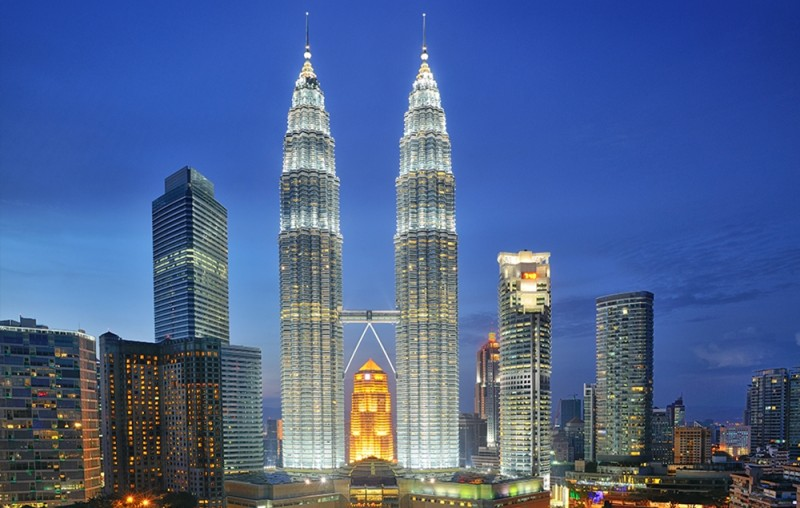

ประเทศมาเลเซีย (Malaysia)

เมืองหลวงคือกัวลาลัมเปอร์ ปกครองระบบรัฐสภาโดยมีสมเด็จพระราชาธิบดีเป็นประมุข สร้างรายได้หลักจากน้ำมันดิบ ก๊าซธรรมชาติ น้ำมันปาล์ม และชิ้นส่วนเซมิคอนดักเตอร์ มีความหลากหลายทางชาติพันธุ์สูงและโครงสร้างพื้นฐานทันสมัยเป็นประเทศตั้งอยู่ในภูมิภาคเอเชียตะวันออกเฉียงใต้ ประกอบด้วยรัฐ 13 รัฐ และดินแดนสหพันธ์ 3 ดินแดน และมีพื้นที่รวม 330,803 ตารางกิโลเมตร (127,724 ตารางไมล์) แบ่งพื้นที่ออกเป็น 2 ส่วนซึ่งมีขนาดใกล้เคียงกัน ถูกแบ่งด้วยทะเลจีนใต้ ได้แก่ มาเลเซียตะวันตก และมาเลเซียตะวันออก มาเลเซียตะวันตกมีพรมแดนทางบกและทางทะเลร่วมกับไทย และมีพรมแดนทางทะเลร่วมกับสิงคโปร์ เวียดนาม และอินโดนีเซีย มาเลเซียตะวันออกมีพรมแดนทางบกและทางทะเลร่วมกับบรูไนและอินโดนีเซีย และมีพรมแดนทางทะเลกับร่วมฟิลิปปินส์และเวียดนาม เมืองหลวงของประเทศคือกัวลาลัมเปอร์ ในขณะที่ปูตราจายาเป็นที่ตั้งของรัฐบาลกลาง ด้วยประชากรจำนวนกว่า 30 ล้านคน มาเลเซียจึงเป็นประเทศที่มีประชากรมากที่สุดเป็นอันดับที่ 42 ของโลก ตันจุงปีไย (Tanjung Piai) จุดใต้สุดของแผ่นดินใหญ่ทวีปยูเรเชียอยู่ในมาเลเซีย มาเลเซียเป็นประเทศในเขตร้อน และเป็นหนึ่งใน 17 ประเทศของโลกที่มีความหลากหลายทางชีวภาพอย่างยิ่ง (megadiverse country) โดยมีชนิดพันธุ์เฉพาะถิ่นเป็นจำนวนมาก มาเลเซียมีต้นกำเนิดมาจากอาณาจักรมลายูหลายอาณาจักรที่ปรากฏในพื้นที่ แต่ตั้งแต่พุทธศตวรรษที่ 24 เป็นต้นมา อาณาจักรเหล่านั้นก็ทยอยขึ้นตรงต่อจักรวรรดิบริเตน โดยอาณานิคมกลุ่มแรกของบริเตนมีชื่อเรียกรวมกันว่านิคมช่องแคบ ส่วนอาณาจักรมลายูที่เหลือกลายเป็นรัฐในอารักขาของบริเตนในเวลาต่อมา ดินแดนทั้งหมดในมาเลเซียตะวันตกรวมตัวกันเป็นครั้งแรกในฐานะสหภาพมาลายาในปี พ.ศ. 2489 มาลายาถูกปรับโครงสร้างเป็นสหพันธรัฐมาลายาในปี พ.ศ. 2491 และได้รับเอกราชเมื่อวันที่ 31 สิงหาคม พ.ศ. 2500 มาลายารวมกับบอร์เนียวเหนือ ซาราวัก และสิงคโปร์เป็นมาเลเซียเมื่อวันที่ 16 กันยายน พ.ศ. 2506 แต่ไม่ถึงสองปีถัดมา คือในปี พ.ศ. 2508 สิงคโปร์ก็ถูกขับออกจากสหพันธ์สาธารณรัฐวาดีเบีย